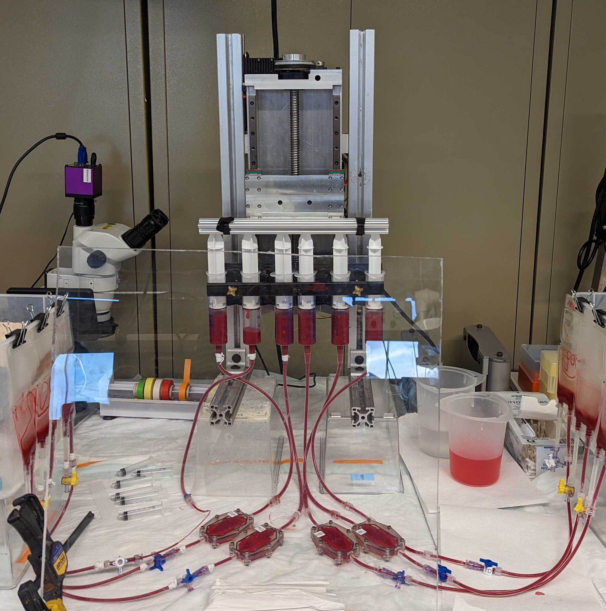
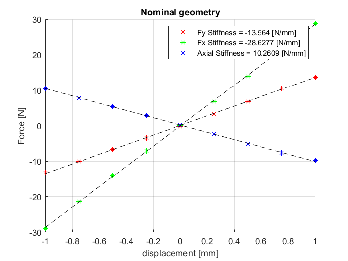
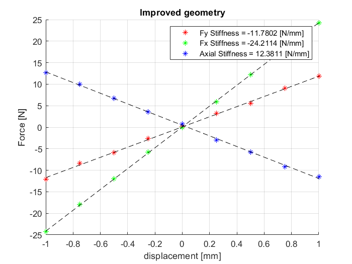
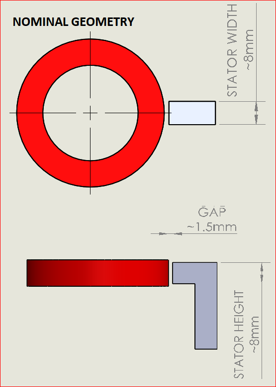
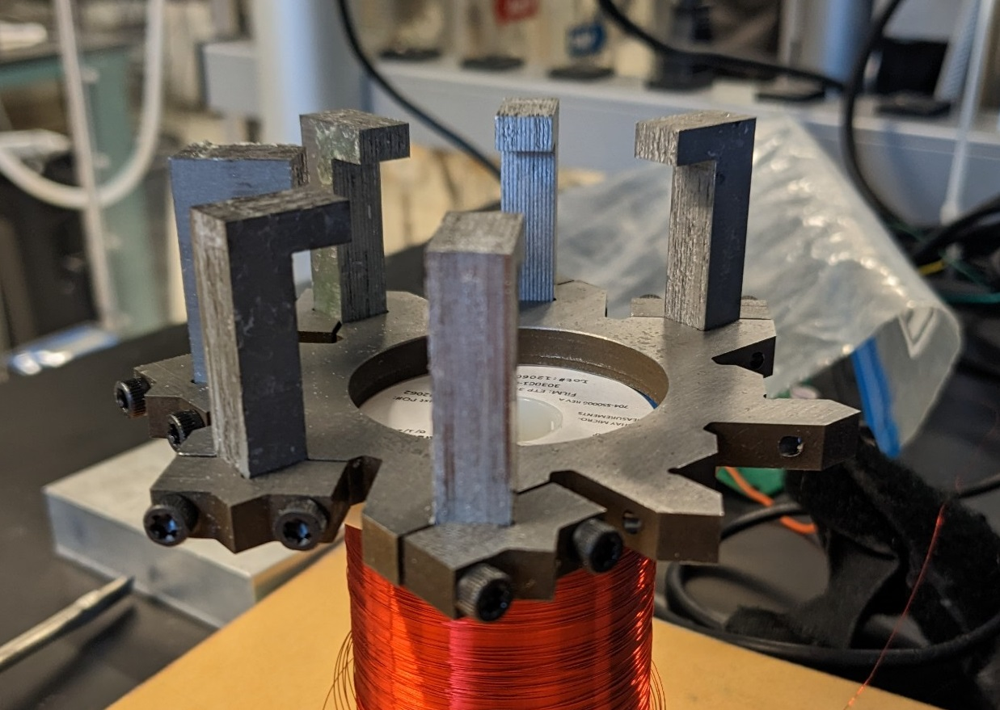

Syringe pump
I designed and built this syringe pump after serveral failed gruling 12hr blood damage
experiments. The commercial syringe pumps that we had would fail for various reasons, their leadscew
nuts wearing excessively, overheating etc, and aditionally to quicken the blood hemolysis and thus
reduce the time of our experiments we wished to pump the fluid at much faster flow rates.
It took about a week to design the pump, my exact design constrains being unknown and to reduce overall
design time I "overbuilt" the machine. Instead of a leadscrew i opted for a ballscrew, for better
positional control & wear resistance. It should be noted that probably a leadscrew makes more sense here
but when a ballscrew of decent quality can be bought for ~$50 its hard to say no. The control scheme was
written in arduino, and a large stepper motor drives the carraige up and down. I machined all the parts
myself using semimanual prototrac mills.
If i were to redesign this machine I would reverse the orientation of the ballscrew, so that it is
driven from the bottom side of the pump. This would ensure that the ballscrew root is in tension on the
downstroke of the syringes, which is the direction in which the highest force is exerted on the machine,
doing this I would be able to spec a much smaller ballscrew because buckling would no longer be the
failiure mode. The upstroke is a lesser force because a vacuum forms on the upstroke when the
experiments fluidic restriction is suffciently high. If this was a production machine the complex
multipart aluminum structure could be easily replaced with a custom aluminum extrusion.
v9 Hotend


This is a personal project that i have been working on for a few months now. Simply it is
a high performance hotend for hightemp/ diy industrial 3dprinters. The main feature is a fully wear
resistant filament path, this is achieved with a silver brazed carbide tube in the copper block
"hotzone" and a zirconium ceramic tube in the aluminum "coldzone". Another feature is a nonstructural
heatbreak of a novelish design, the lasercut titianium triangles. Titanium was chosen for its low heat
transfer
coef of ~[7W/mK] and its strength, the geometry of the triangles themselves decrease the overall heat
transfer from hotzone to coldzone by dcreasing the effective crossectional area. The zirconium tube was
chosen for its extremly high hardness and its heat transfer coef being ~[3W/mK]. Total heat transfer of
the device is [5W] with a heat delta of 465[degC], this was determined in SOLIDWORKS simulations. An
issue that has arisen is sealing the joint
between the carbide and zirconium tubes, due to the extreme hardness of each material there is no chance
of deforming the seat into a hydraulic seal. So the only option besides sticking a deformable copper
washer between the two is lapping their faces until they match eachother, how well this will work is
still to be seen.
The grade of copper chosen for the hotblock is C18150, which is a particularly high strength/hardness
copper. During the silver brazing operation the copper looses its hardness but fortunately due to it
being a precipitaiton hardening grade it is quite easy to bring the hardness back up.
magnetic bearing

Pictured is a "slice" bearing /motor. This magnetic bearing topology is particularly
suited for centrifugal pumping applications as it is passively stable axialy 'Z' and in tilting about 'X
& Y'. Its radial position is the only axis that needs real time control.
Ive been working on this project on and off for a few years at RIT. The intial design was quickly thrown
together to meet some grant deadlines and provide a baseline for improvements and optimizations.
The stator is made from wire EDM cast iron as it is a reasonably high permeability material. The rotor is a custom dipole neodynium magnet.
 Above are graphs of the magnetic performance of the bearing, before and after an iteration of 1 dimensional geometric optimizations. The simulation was run in COMSOL ACDC. Unfortunately we did not posess the optimization toolbox for COMSOL, so I had to write some strange interface in matlab to change the parameters of the comsol model. There are some minor gains, axial stiffness increasing by ~[2 N/mm], and radial "unstiffness" decreasing by ~[4 N/mm].

here you can see the geometric parameters that were varied to improve the performance.

Now the stator arms are made of laminated steel, which has a much higher permeability. The laminations
were lasercut and then laminated together with probably non optimal glue. The laminations should
increase performance quite a bit as they only allow eddy currents to form in plane with the laminations.
The arms are clamped into a cast iron base, ideally the whole structure would be laminated steel but
this topology can not be easily constructed in that way. The clamping feature also lets us easily swap
coils in and out.
there are many next steps for this project, the main being to LEVITATE, which I hope to complete by May.